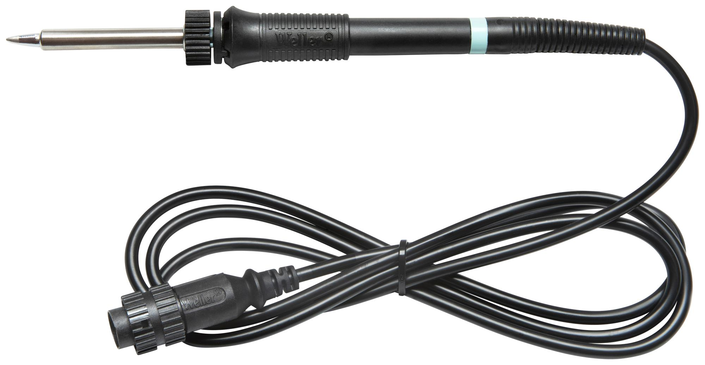
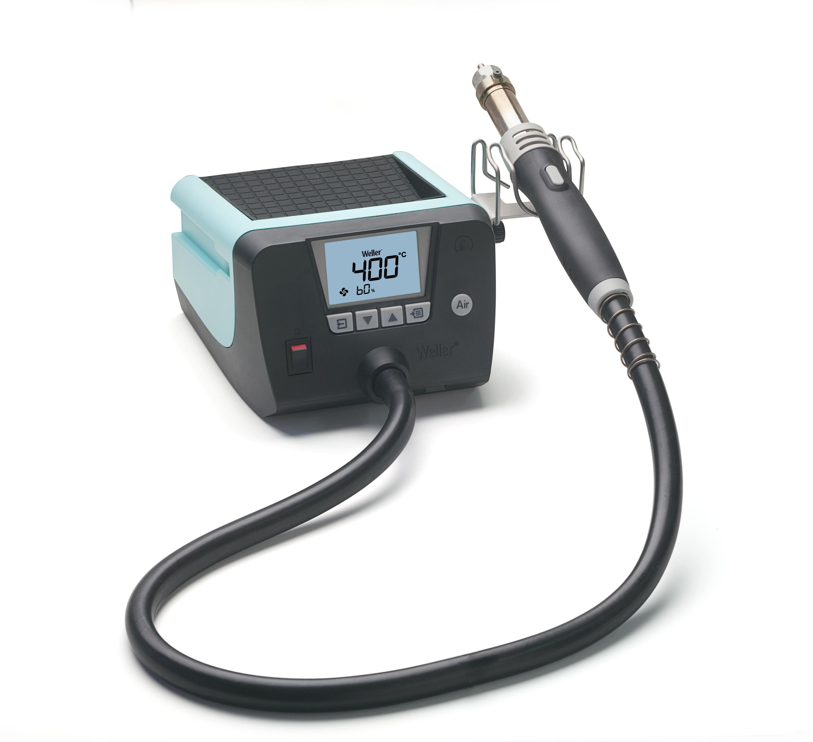
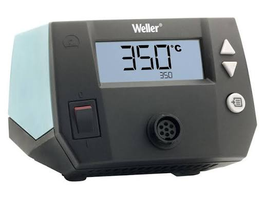
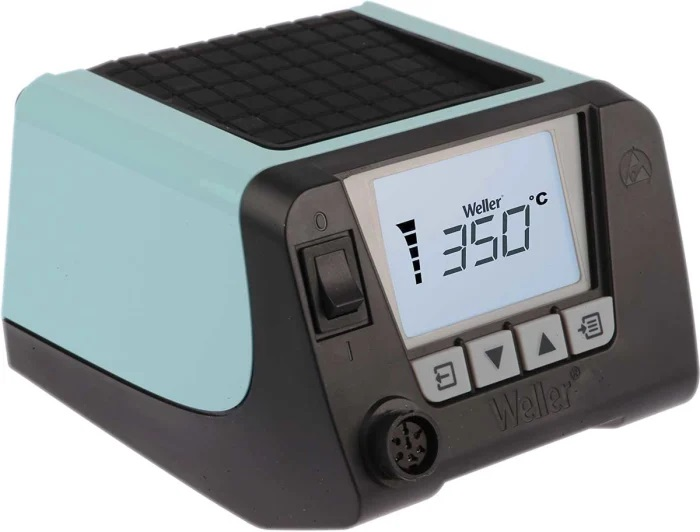
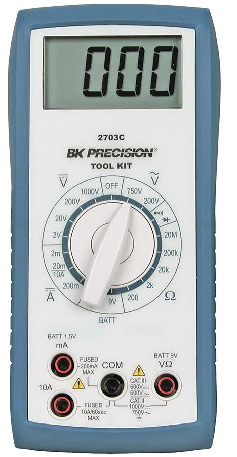

Coordinación de Ingeniería Aeroespacial - UNAM

Inventario: LY207724, LY207824, LY207924
Cantidad: 3

Inventario: LY104124, LY104224, LY104324
Cantidad: 3

Inventario: LY104724, LY104824, LY104924
Cantidad: 3

Inventario: LY104424, LY104524, LY104624
Cantidad: 3

Inventario: LY105024, LY105124, LY105224
Cantidad: 3